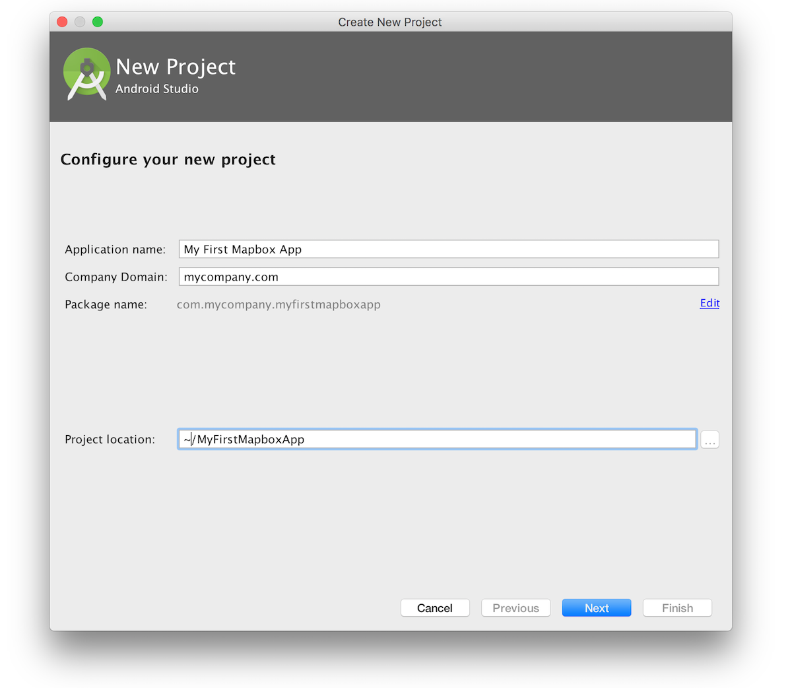
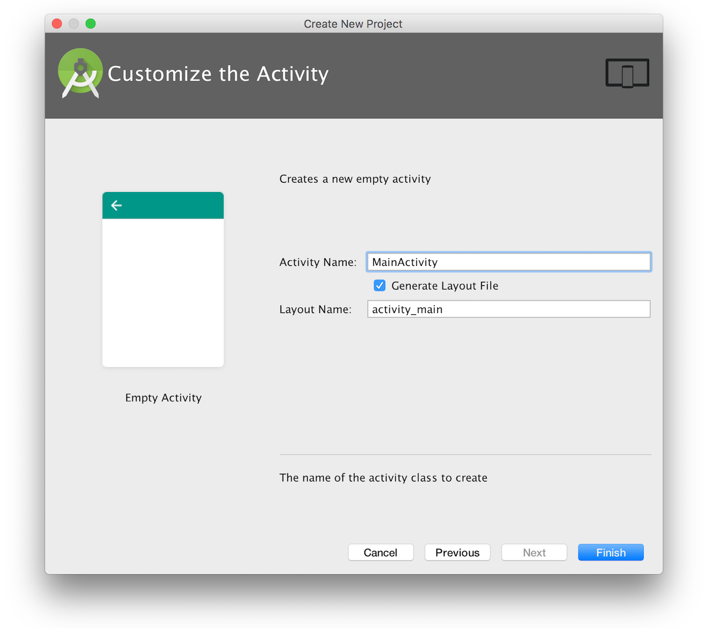

First steps guide
The Map SDK is our vector maps library for Android. This guide will walk you through installing the SDK with Android Studio, loading a map, placing a marker on it, and changing the map style.
Getting started
Here’s what you’ll need to get started:
-
An access token. You can find your access tokens on your account page.
-
Android Studio. You can get this for free from Google.
-
Google Play Developer Account (optional). If you want to publish your app to Google Play, you’ll need a Google Play developer account. Without one, you’ll still be able to preview the app on an Android Virtual Device (AVD) or install the app on a physical device.
Setting up Android Studio
Open Android Studio and go to File ‣ New ‣ New Project to create a new project (or select Start a new Android Studio project). Under Configure your new project:
- Name the project
My First Mapbox App - Set company domain to
mycompany.com

Under Select the form factors your app will run on, check “Phone and Tablet.” For minimum SDK, select API 15: Android 4.0.3 (IceCreamSandwich). This is the lowest API level currently supported by Mapbox Android SDK.
Click Next to advance to the activity selection screen. Select Empty Activity and click Next. Accept the default Activity Name and Layout Name and click Finish.

Set up an Android Virtual Device
Android Studio can help you set up virtual Android devices on your computer to help test your app while you develop. To set one up, click on the Android Virtual Device (AVD) Manager icon  , then click the Create Virtual Device button. From the Phones category, select Nexus 5X and click Next. Select the release you would like to test against (this guide was built using Marshmallow API level 23, x86, Android 6.0). Learn more about setting up an AVD from Android Studio’s documentation.
, then click the Create Virtual Device button. From the Phones category, select Nexus 5X and click Next. Select the release you would like to test against (this guide was built using Marshmallow API level 23, x86, Android 6.0). Learn more about setting up an AVD from Android Studio’s documentation.
Installing Mapbox
We recommend installing with Gradle. This will automatically install the necessary dependencies and pull the Map SDK binaries from the Maven Central repository.
To install the current stable version, add this to your Module Build File ~/MyFirstMapboxApp/app/build.gradle:
repositories {
mavenCentral()
}
dependencies {
// add the Mapbox SDK dependency below
compile ('com.mapbox.mapboxsdk:mapbox-android-sdk:5.0.2@aar'){
transitive=true
}
}
{kind=link}
App permissions
Add either a course or fine location permission in your project’s AndroidManifest.xml file from ~/MyFirstMapboxApp/app/src/main/:
<uses-permission android:name="android.permission.ACCESS_COARSE_LOCATION" />
<uses-permission android:name="android.permission.ACCESS_FINE_LOCATION" />
If the app is targeting Android Marshmallow (API 23) or later it’s necessary to request permissions at runtime.
Access tokens
To use Mapbox services and APIs, such as maps, directions, and geocoding, you must have a Mapbox access token. You can find your access tokens in your account settings, where you can retrieve current tokens and generate new ones. Using separate access tokens per project help you track usage and minimize disruption in the event a token needs to be revoked.
First, go to your account settings and create a new access token for My First Mapbox App. Once you’ve got your token, open strings.xml file from ~/MyFirstMapboxApp/app/src/main/res/values.
{kind=link}
Add a new string for your access token:
<resources>
<string name="app_name">My First Mapbox App</string>
<string name="access_token"><your access token here></string>
</resources>
Now open the MainActivity.java file and get a Mapbox instance in your onCreate method:
@Override
protected void onCreate(Bundle savedInstanceState) {
super.onCreate(savedInstanceState);
// Line must go before the layout XML files loaded
Mapbox.getInstance(this, getString(R.string.access_token));
setContentView(R.layout.activity_main);
...
}
MapView
The MapView behaves like any other View and its behavior can be changed statically with an XML layout file, or programmatically during runtime.
To add the MapView as a layout element, replace the code in the activity_main.xml file from ~/MyFirstMapboxApp/app/src/main/res/layout/ with the following:
<?xml version="1.0" encoding="utf-8"?>
<RelativeLayout
xmlns:android="http://schemas.android.com/apk/res/android"
xmlns:tools="http://schemas.android.com/tools"
xmlns:mapbox="http://schemas.android.com/apk/res-auto"
android:layout_width="match_parent"
android:layout_height="match_parent"
tools:context=".MainActivity">
<com.mapbox.mapboxsdk.maps.MapView
android:id="@+id/mapview"
android:layout_width="match_parent"
android:layout_height="match_parent" />
</RelativeLayout>
Later on, you can call the MapView class programmatically within an Activity:
findViewById(R.id.mapview);
MapboxMap
Once you have declared and assigned your MapView, you will need to call MapView.getMapAsync to create a MapboxMap object. The MapboxMap object allows you to change styles and interact with your map.
mapView.getMapAsync(new OnMapReadyCallback() {
@Override
public void onMapReady(MapboxMap mapboxMap) {
// Interact with the map using mapboxMap here
}
});
Now you’re ready to start building with Mapbox!
Adding a map
Let’s add a map of Chicago to our app. To start, open your My First Mapbox App in Android Studio and navigate to ~/app/src/main/java/com.mycompany.myfirstmapboxapp/MainActivity.java.

We’re going to use the mapView class we set up earlier to add a Mapbox map to our app. The app needs to know when to add the map, so we’ll do so when the activity is initialized with onCreate.
private MapView mapView;
@Override
protected void onCreate(Bundle savedInstanceState) {
super.onCreate(savedInstanceState);
MapboxAccountManager.start(this, getString(R.string.access_token));
setContentView(R.layout.activity_main);
// Create a mapView
mapView = (MapView) findViewById(R.id.mapview);
mapView.onCreate(savedInstanceState);
}
Next, use your new mapView class to create a MapboxMap object. MapboxMap has lots of built-in methods that will allow you to change map styles or camera position, add markers, and more. Create your MapboxMap inside an OnMapReadyCallback:
private MapView mapView;
@Override
protected void onCreate(Bundle savedInstanceState) {
super.onCreate(savedInstanceState);
MapboxAccountManager.start(this, getString(R.string.access_token));
setContentView(R.layout.activity_main);
// Create a mapView
mapView = (MapView) findViewById(R.id.mapview);
mapView.onCreate(savedInstanceState);
// Add a MapboxMap
mapView.getMapAsync(new OnMapReadyCallback() {
@Override
public void onMapReady(MapboxMap mapboxMap) {
// Customize map with markers, polylines, etc.
}
});
}
Configure your mapView
You can configure many of your map’s characteristics, including starting camera position, and style URL, in your activity’s layout file. Add the following to your activity’s layout file, inside your com.mapbox.mapboxsdk.maps.MapView tags:
<com.mapbox.mapboxsdk.maps.MapView
mapbox:mapbox_cameraTargetLat="41.885"
mapbox:mapbox_cameraTargetLng="-87.679"
mapbox:mapbox_styleUrl="@string/mapbox_style_mapbox_streets"
mapbox:mapbox_cameraTilt="20"
mapbox:mapbox_cameraZoom="12"
...
/>
When you’ve finished entering the above code, you will probably see some red warning text from Android Studio. This is because we haven’t yet imported some of the classes we’re referencing in MainActivity.java. You can automatically import these classes by pressing Alt + Enter (option + return on Mac). Alternatively, manually add the following to the top of your MainActivity.java file:
import android.app.Activity;
import android.os.Bundle;
import com.mapbox.mapboxsdk.maps.MapView;
import com.mapbox.mapboxsdk.maps.MapboxMap;
import com.mapbox.mapboxsdk.maps.OnMapReadyCallback;
import com.mapbox.mapboxsdk.MapboxAccountManager;
Next, we’ll handle the other types of events that might affect our map app:
@Override
public void onStart() {
super.onStart();
mapView.onStart();
}
@Override
public void onResume() {
super.onResume();
mapView.onResume();
}
@Override
public void onPause() {
super.onPause();
mapView.onPause();
}
@Override
protected void onStop() {
super.onStop();
mapView.onStop();
}
@Override
public void onSaveInstanceState(Bundle outState) {
super.onSaveInstanceState(outState);
mapView.onSaveInstanceState(outState);
}
@Override
public void onLowMemory() {
super.onLowMemory();
mapView.onLowMemory();
}
@Override
protected void onDestroy() {
super.onDestroy();
mapView.onDestroy();
}
Click the Run ‘app’ button  to build your app. Android Studio will take a few seconds to build and if it finishes without errors, you’ll be able to test drive it in the AVD you set up earlier.
to build your app. Android Studio will take a few seconds to build and if it finishes without errors, you’ll be able to test drive it in the AVD you set up earlier.

Changing the map style
The Mapbox Android SDK comes bundled with a handful of map styles, so let’s try changing it up a bit. You can find a list of the current bundled styles with the Mapbox SDK’s Style constant. Let’s use the LIGHT style (the version of Mapbox Light that conforms to the {{site.styleVersion}} release of the GL style specification).
To set your map’s initial style to LIGHT, open your activity_main.xml layout file and set mapbox:mapbox_styleUrl to
@string/mapbox_style_light:
<com.mapbox.mapboxsdk.maps.MapView
mapbox:mapbox_styleUrl="@string/mapbox_style_light"
...
/>
You can also change your style programmatically using MapboxMap's setStyleURL method. Inside onCreate(), change the line that sets mapboxMap's style to:
mapboxMap.setStyleUrl(Style.LIGHT);

Creating your own styles
You can create custom styles with Mapbox Studio and add them to your app. To add one of your custom styles to your mapboxMap, head to your styles page, copy your style’s style URL, then add it to your mapboxMap with setStyleURL():
mapboxMap.setStyleUrl("mapbox://styles/<your-account-name>/<your-style-ID>");
Using Mapbox Studio Classic styles and maps
Raster maps and styles created with Mapbox Studio Classic are not directly compatible with the Android SDK, though you can still load these maps via a custom style. Please note that associated markers, lines, and shapes are not supported.
Next steps
You just built a small Android app with Mapbox! You can now create an Android Studio project, install the Mapbox SDK, and change the map style. Pat yourself on the back!
As you continue to develop your Mapbox app, we recommend that you read the following:
- Draw and configure markers — learn how to add and customize markers in your application
- Attribution — comply with the licensing terms of the map data used in your application
We’ll be adding and updating guides to help you learn all of Mapbox’s amazing features as we continue to develop it. Here are a few resources to keep you up-to-date with Mapbox:
- Mapbox Android SDK documentation
- Mapbox GL Native on GitHub to follow the open source project behind Mapbox Mobile